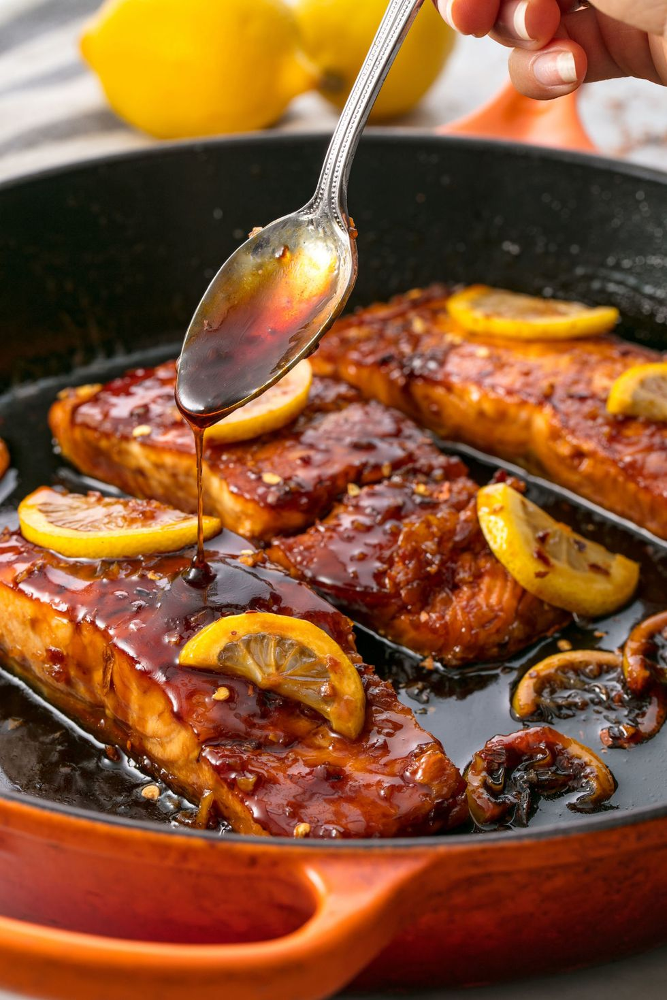

Homepage
Honey soy salmon

Description:
A delicious salmon recipe with a honey and soy sauce with hints of lemon.
Ingredients:
- 100g honey
- 60ml soy sauce
- 1 tsp. chilli flakes
- 3 tbsp. extra-virgin olive oil
- 4 salmon fillets
- salt
- ground black pepper
- 3 cloves garlic
- 1 lemon
- parsely
Steps:
- In a medium bowl, whisk together honey, soy sauce, lemon juice and chilli flakes.
- In a large frying pan over medium-high heat, heat two tablespoons oil. When oil is hot but not smoking, add salmon skin-side up and season with salt and pepper. Cook salmon until deeply golden, about 6 minutes, then flip over and add remaining tablespoon of oil.
- Add garlic to the pan and cook until fragrant, 1 minute. Add the honey mixture and sliced lemons and cook until sauce is reduced by about 1/3. Baste salmon with the sauce.
- Garnish with sliced lemon and parsley to serve.
Disclaimer: This recipe orginates from here, no credit should go to me